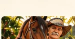
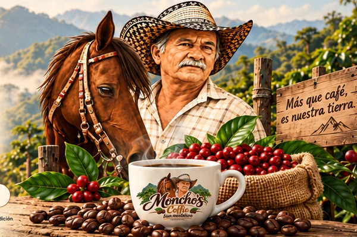
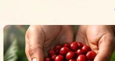
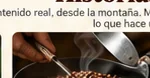
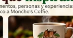
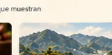
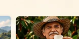

La vida en la montaña
El personaje detrás del café.
MONCHO'S COFFIE · CAFÉ CON CARÁCTER
Café para compartir historias, recordar nuestras raíces y disfrutar el sabor auténtico de lo que nos une.

NUESTROS CAFÉS
Una colección con el carácter de nuestra tierra.
* Empaques, nombres, presentaciones y precios de muestra: pendientes de aprobación de Moncho's Coffie.
NUESTRA HISTORIA
Contenido que conecta, entretiene y vende.
La montaña también tiene sentido del humor. Una marca con personalidad, un personaje memorable y muchas historias para contar alrededor del café.
MÁS QUE CAFÉ
Momentos de la montaña que podemos transformar en videos, conversaciones y experiencias para recordar.

El personaje detrás del café.

Así comienza nuestra historia.

Tradición en cada detalle.

El café sabe mejor en compañía.

Un origen que nos inspira.

Bien montañero, bien auténtico.
NUESTRA COMUNIDAD
Pronto compartiremos aquí opiniones y experiencias auténticas de nuestros clientes.
ESPACIO RESERVADO PARA TESTIMONIOS VERIFICADOSEL BUEN CAFÉ SE COMPARTE
Muy pronto podrás conocer nuestras presentaciones y encargar tu café favorito.